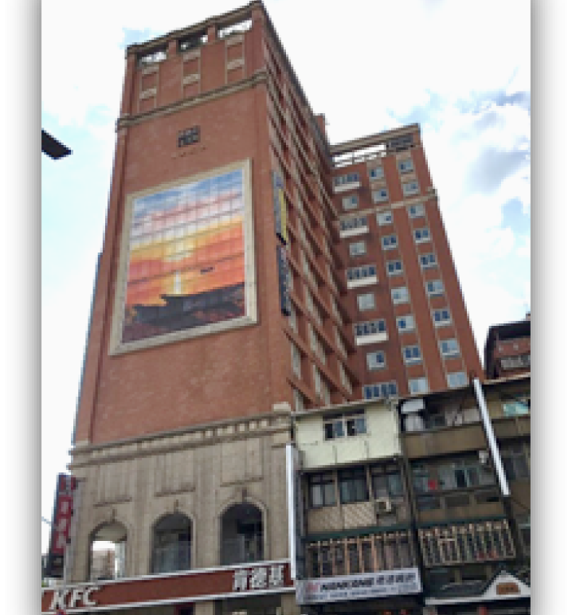

Tamkang International Hall is an off-campus dormitory with the whole building made of fireproof materials that all correspond with fire detection regulations. Fire drills are held regularly.
There is a reception hall on the first floor with three elevators in total, the third being for female students that reaches floors 3 to 7. The first and second elevators are for male students, which reach floors 8 to 14.
- Entrance control: There are 160 security cameras in total and are controlled by 24-hour professional security guards. Each room is unlocked with a room card. Entering and leaving the dorm at night will have records that are periodically updated on the Student Housing Guidance Section website for students and parents to keep track of.
- Hardware supplied: Each room can house three or four students. Tamkang International Hall bed size: 192cm X 90cm (bigger bed: 215cm X 90 cm) with bathrooms and Wi-Fi. Even-numbered floors have a small lounge inside with fridges, microwaves, ovens, and rice cookers. The roof floor has a large public area and gym equipment.
- Leisure activities: Establish a dormitory student committee made up of passionate students to hold special events such as freshmen welcome parties, movie nights, and club performances.
- Guidance and Counseling section: Three counselors and one mechanic are assigned to assist students with daily needs and other administrative tasks. Counselors are available at night and on weekends to help with sudden accidents so that family members won’t have to worry about students' safety.
- Life functions: On Monday to Friday, there are free buses that will take students to campus (approximately a 15-minute walk).
- Residential College: To cooperate with the Ministry of Education's “Higher Education SPROUT Project”, Tamkang International Hall will promote a Residential College starting from 2018. Tamkang International Hall will hire two professors to assist students in learning and homework.
- Holistic Education: To train students' international view to confront global challenges, students from ICMS, GPE CSIE, and the Department of English will continue the “Holistic Education” from Lanyang campus. The core of this plan is to establish English-speaking environments and international learning experiences for students to confront global challenges when studying abroad during their junior year.